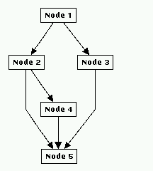
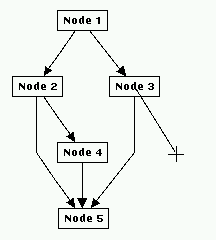
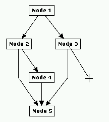
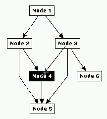
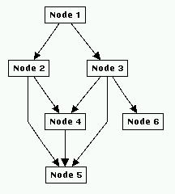

Tutorial Exercise 5.4: Using Drag and Drop
In the previous sections you have used menus and icons to manipulate the graph. With the drag and drop feature of uDraw(Graph), you are able to directly manipulate the graph with the mouse when the graph editor is connected to the API. (more details about drag and drop can be found in the graph editor documentation). Just click the middle mouse button somewhere over free space in the graph area of the base window. A new node will be inserted directly at the position of the mouse pointer, if this is possible according to the principles of hierarchical graph layout. Now press the middle mouse button over an existing node and drag (i.e. move) the mouse while still holding the button. An abstract edge will follow the mouse pointer. Move the mouse pointer somewhere over the graph area but not over another node and release the button. You have created a new child node for the parent where you have started with dragging the edge.

 

Dragging a new child node with the middle mouse button
Last but not least insert a new edge between two nodes. Again press the button over an existing node but now move the pointer to the designated child node while holding the mouse button pressed. You will see that all nodes you pass with the pointer are drawn inverted to indicate which node becomes the child node if you release the button. After releasing the button over a node, a new edge is inserted between the parent where dragging was started and the child where the button was released. You can even insert a self-edge when you release the button over the node where you have started with dragging (you have to move the mouse a little bit before releasing the button).


Dragging a new edge with the middle mouse button
Another way to use drag and drop is to copy a node. Just press the SHIFT-key and the middle mouse button over a node. The node is drawn inverted to indicate dragging, but it will not follow the mouse. Then move the mouse to another place in the graph area or if you are editing several graphs move it even to another window and release the button there. A copy of the node (with the same attributes and text) is inserted. If you have released the button over another node, the copy of the node is inserted as a child node of the node under the mouse pointer, together with its connecting edge.
End of Exercise 5.4. Go back to the Section 5 Overview.